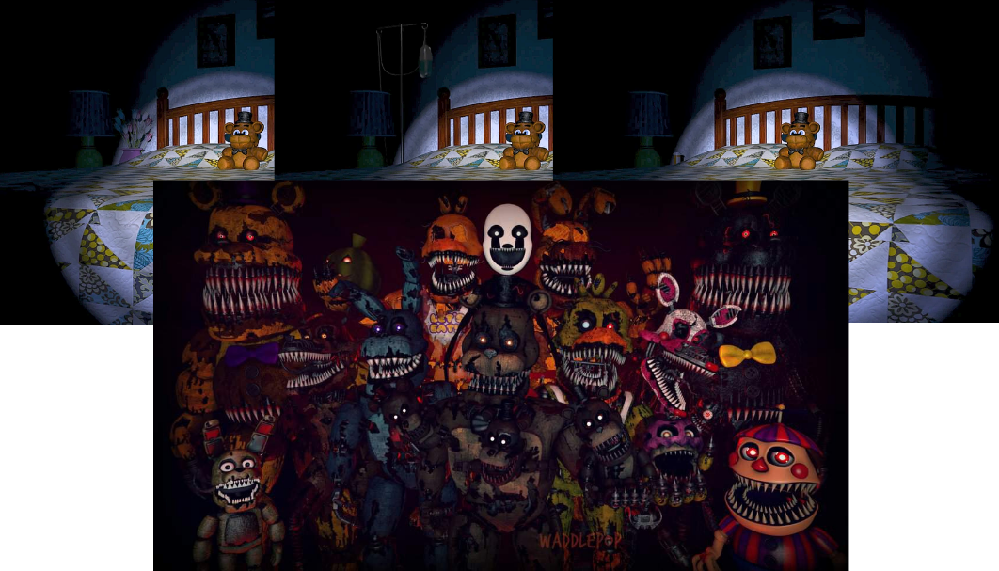
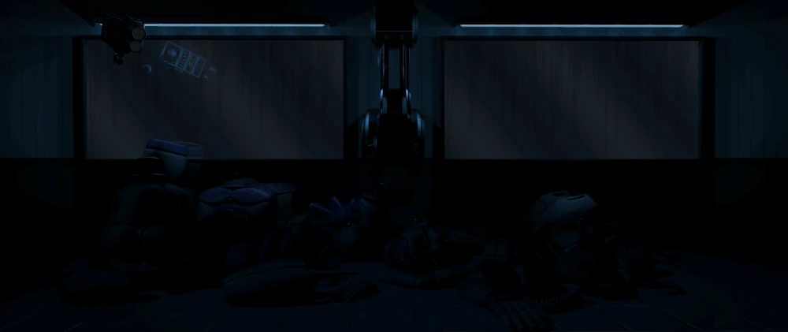
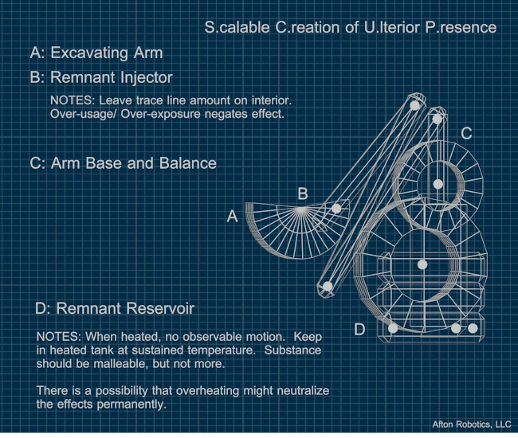
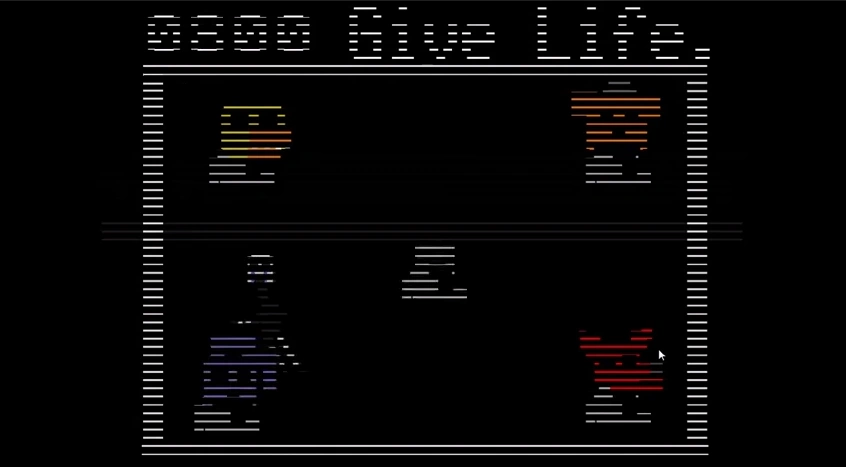
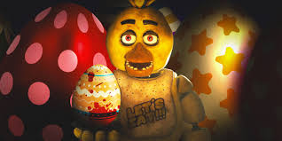

En premier lieu nous allons parler du lien entre le monde onirique et Five Night at Freddy 4, le 4e Opus de la série
Cet opus se passe en 1983, ou nous contrôlons Evan Afton dans sa chambre où nous devrons empêcher Les Animatroniquess Nightmare de l'attraper
Vous allez me dire, quel est le lien entre le monde Onirique et cet opus, c'est que tout le long du jeu se passe dans un cauchemar, lors du coma de Evan Afton
Après ceci vous deviez sûrement vous dire, comment la communauté de la Franchise peut déduire ceci, et ben c'est simple, lors des nuits, on peut se déplacer dans 4 endroits de la chambre, la porte de Gauche, la Porte de Droite, le Placard et enfin le lit, et c'est ce lit qui nous intéresse
En effet, lorsqu'on se situe devant le lit, on peut voir la table de nuit ou, selon les nuits et la chance (1/100), on peut voir différents objets comme, des fleurs, des médicaments ou encore une perfusion, il y a aussi Les Animatroniques Freddy, Bonnie, Chica, Foxy et Fredbear en version cauchemardesque ce qui peut rappeler la peur de ces nouveaux animatroniques que son père a confectionnés

Ahhh, l'univers, une chose magnifique d'habitude, mais, dans FNaF, elle est étrange, voire même, lugubre
Et pour vous le montrer on va parler de William Afton, l'Antagoniste principale de la série
Lors du meurtre de Charlotte Emily, William découvrit quelque chose, l'âme de l'enfant continuait de vivre, il nomma ça, le Remnant, Remnant est le terme désignant la manifestation physique de souvenirs imprégnés et possédant des objets inanimés, ce qui en fait une force motrice derrière les événements paranormaux dans Les Animatroniques en plus des esprits eux-mêmes.
Il créa une machine dans le Circus Baby's Entertainment and Rental, une pièce rien que pour cette machine, la Scooping Room (Ou salle de ramassage)
Cette pièce renfermait une grande machine qui ressemblait à une pelleteuse.

Le Scooper permet d'introduire le remnant dans les personnes ou même, si possibilité, d'introduire des animatroniques

Grâce à un certain taux de remnant récupéré, celui-ci peut faire en sorte, à la personne qui le prend, de devenir immortelle. Nous supposons que lors des meurtres de Charlotte et des 5 enfants, William a réussi à récupérer assez de Remnant pour devenir immortel. C'est ce qui va se passer en premier lieu lorsqu'il se fait springlocké dans le costume de Springbonnie, et aussi lors de l'incendie de Fazbear's Fright. Lorsque l'on finit la Nightmare Ending, le jeu nous affiche une page de journal disant que l'attraction a brûlé et que peu de choses qui n'ont pas brûlé ont été récupérées. Lorsque l'on augmente la luminosité de ce journal, on peut voir quelque chose...
William/Springtrap a survécu à l'incendie (il est derrière le jouet en forme de Freddy). Il en ressortira très amoché, mais ceci prouve que le Remnant permet de rester en vie
Lors de la mort de Charlotte au Fredbear Family Dinner, l'un des animatroniques nommé Security Puppet (dans sa première version) sort du restaurant sous la pluie pour retrouver le corps encore frais de la petite Charlotte
Security Puppet, en voyant cela et à cause de la pluie, s'écroule sur le corps de Charlotte. Mais quelque chose d'inexplicable se produit : l'âme de Charlotte fusionne avec Security Puppet
Après cela, les employés du Fredbear Family Dinner retrouvent Puppet, la ramènent et la réparent. Plusieurs années plus tard, en 1987, Security Puppet est rénové et est maintenant simplement appelé Puppet. Juste avant le déroulement de FNaF 2, après les meurtres des 5 enfants, pendant la nuit, Puppet retrouve les corps des 5 enfants. Elle leur implante les costumes de Withered Freddy, Chica, Bonnie, Foxy et Golden Freddy et leurs âmes fusionnent avec les costumes. Depuis ce jour, ces 5 animatroniques de la franchise sont contrôlés par ces enfants

